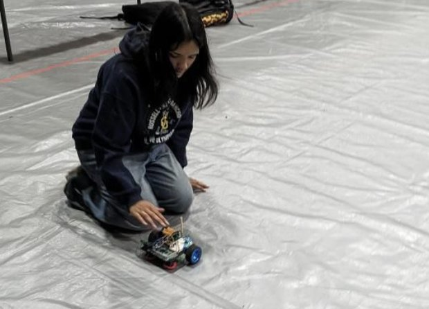
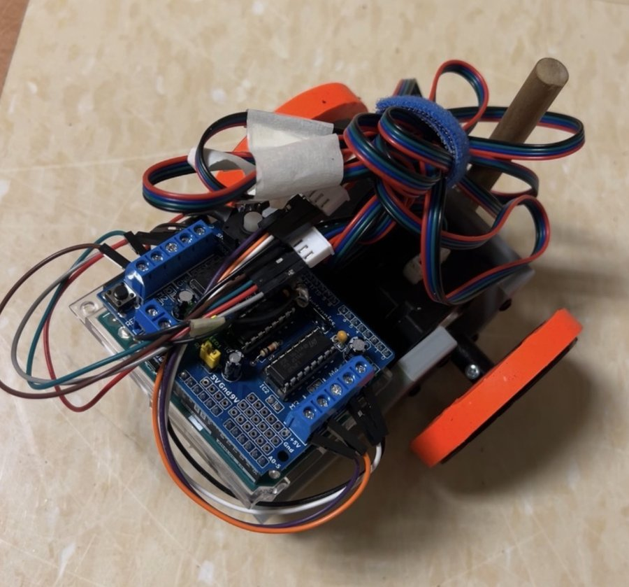
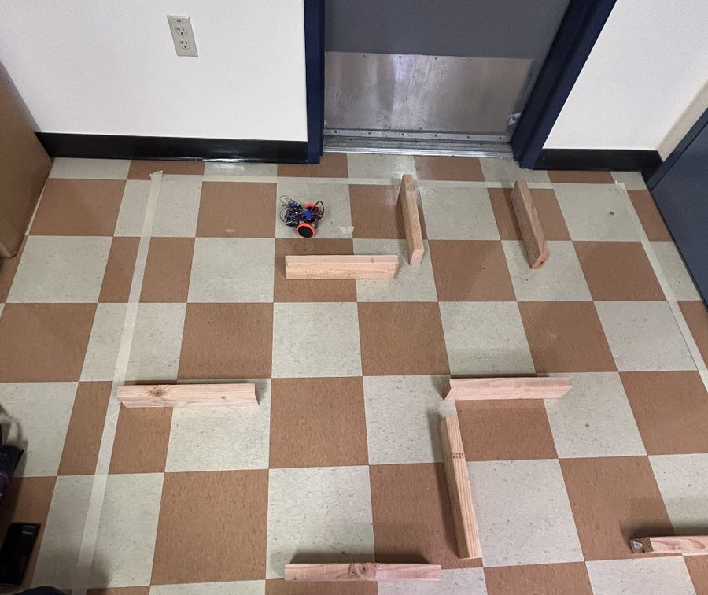
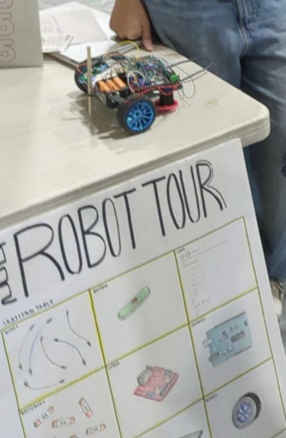

Robot Tour
An autonomous robot that drives a track we only see when the competition timer starts. Within 10 minutes we had to program the route, place the robot, and let it run, with three attempts to get it right.

The challenge
The track layout, a grid with wooden barriers, is revealed only when the clock starts. That rules out anything tuned to a specific course: the robot has to be reprogrammed on the spot, so it needs to turn a simple list of moves into accurate distances and turns, every time.
Robot 1: stepper motors


The first robot's code is fully open-loop: each move runs the motors for a calibrated amount of time. Driving forward takes 85 ms per centimeter, and turns are a fraction of a measured 2.15-second full rotation, with a separate correction factor for each direction because the two sides didn't turn at quite the same speed. The route is hard-coded and runs once at power-up.
void forward(float distance) { // distance in cm
double x = distance * (850 / 10.0); // 85 ms per cm, calibrated on the track
...Timing works until conditions change: as the battery drains, the motors slow down and the same delay covers less distance. To get repeatable accuracy, we switched to DC motors with encoders, which measure how far each wheel has actually turned instead of assuming it.
Robot 2: DC motors with encoders
The second robot's firmware closes the loop on wheel motion:
- Route as a command list: the course is entered as a short list of commands (FORWARD 250, TURN_LEFT, and so on), which is quick to write in the 10-minute window. A start button begins the run, and pressing it again aborts.
- Encoder counting with interrupts: each wheel's encoder triggers a hardware interrupt on every pulse, so no counts are missed while the main loop runs. With 540 pulses per wheel revolution and 184 mm of travel per revolution, each pulse is about 0.34 mm.
- Smooth motion profile: each move ramps up, cruises, and ramps down at a set acceleration, so the wheels don't slip at the start or overshoot at the end.
- PI speed control: every 30 ms, the code compares each wheel's measured speed to the profile and adjusts its PWM with a proportional-integral loop, then stops the wheel at the target count.
- Calibrated turns: a 90° turn is a fixed encoder count (425 pulses), measured on the robot, with the wheels driven in opposite directions.
// mm to encoder counts for a forward move
distance = mm * ENCODER_COUNTS_PER_REV / MM_PER_REV; // 540 counts / 184 mmCompetition
